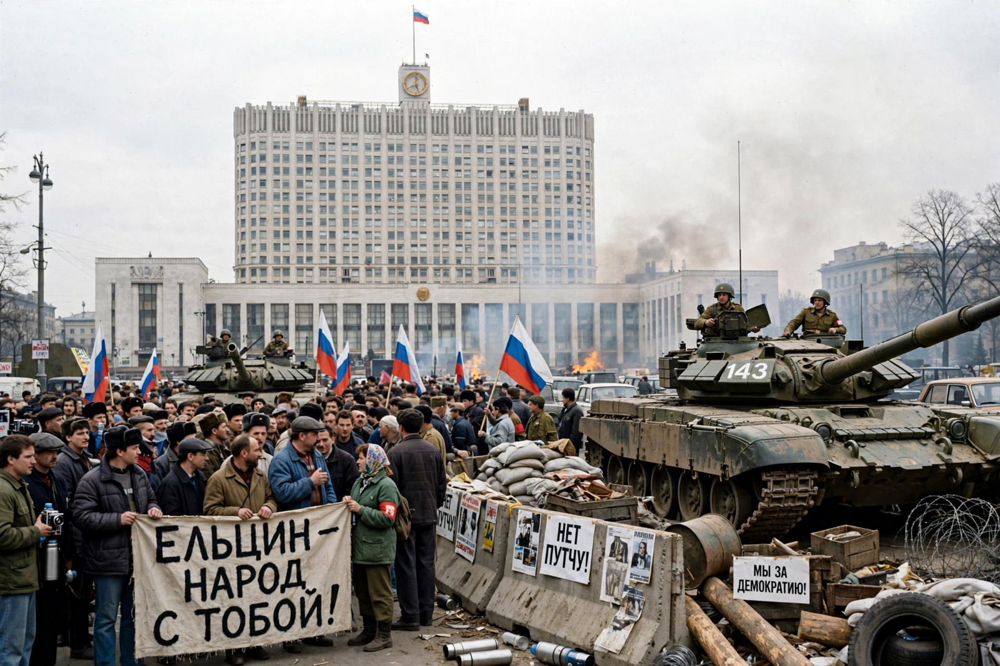

1991 Soviet coup d'état attempt
The 1991 Soviet coup d'état attempt, also known as the August Coup, was a failed attempt by hard-line members of the Soviet government to seize power from President Mikhail Gorbachev. Between 19 and 21 August 1991, the self-styled State Committee on the State of Emergency (GKChP) detained Gorbachev at his dacha in Crimea and declared a state of emergency, aiming to prevent the signing of a new Union Treaty. Mass resistance led by Boris Yeltsin caused the coup to collapse within three days.

| Date | 19–21 August 1991 |
|---|---|
| Location | Moscow, Russian SFSR, Soviet Union |
| Organisers | State Committee on the State of Emergency (GKChP) |
| Target | Mikhail Gorbachev |
| Outcome | Coup failed; accelerated dissolution of the USSR |
Events
On 18 August the plotters demanded Gorbachev declare a state of emergency or resign; he refused and was cut off from communications at Foros. The next morning state media announced he was ill and that Vice President Gennady Yanayev had assumed power. Tanks rolled into Moscow, but Yeltsin, president of the Russian republic, denounced the coup from atop a tank outside the White House and called a general strike. When elite units refused orders to storm the building — and three civilians were killed in a clash near a barricade — the plot unravelled; its members fled or were arrested on 21 August.
Consequences
Gorbachev returned to Moscow politically weakened: power flowed to Yeltsin and the republics. The Communist Party was suspended in Russia, the Baltic states' independence was recognised, and by December 1991 the Soviet Union itself was dissolved.
See also
Adolf Hitler · Mikhail Gorbachev · Boris Yeltsin · Dissolution of the Soviet Union